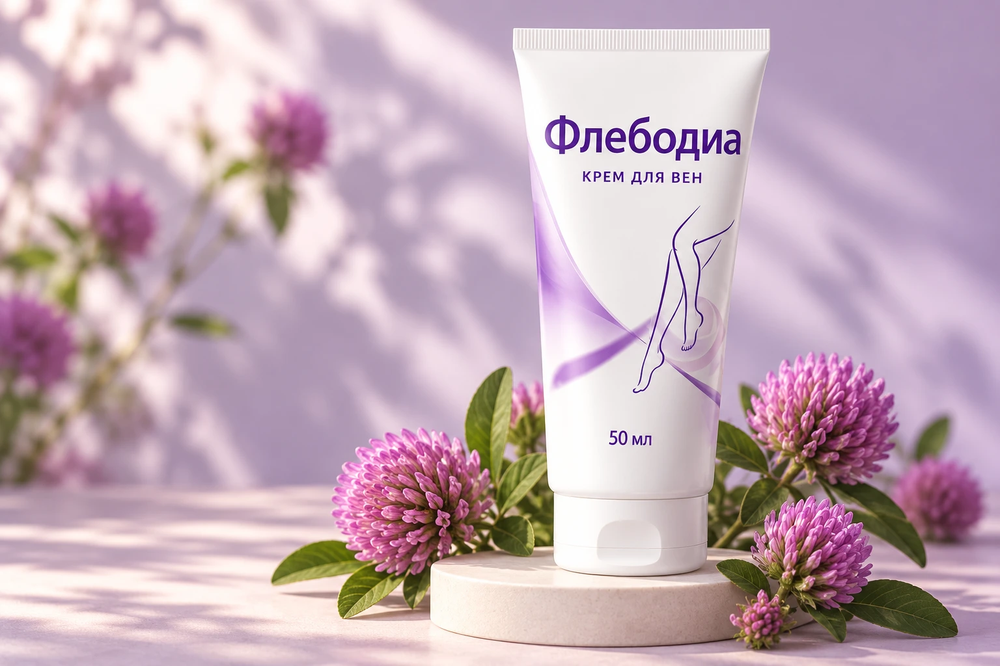

При ощущении
тяжести и усталости
Помогает уменьшить чувство напряжения после длительной ходьбы, работы стоя и привычных нагрузок.
Когда ноги устали от долгого дня, подарите им немного заботы. Флебодиа помогает уменьшить чувство тяжести и напряжения, дарит ощущение прохлады и комфорта.
Выбрать Флебодиа ↗Цена, наличие и доставка — на Ozon

Троксерутин + рутинРабота на ногах, долгая прогулка, повседневные заботы — к вечеру хочется снять обувь и отдохнуть. Флебодиа дополнит этот момент уходом за кожей ног.
Помогает уменьшить чувство напряжения после длительной ходьбы, работы стоя и привычных нагрузок.
Формула с ментолом дарит приятное ощущение прохлады. Небольшой вечерний ритуал для вашего комфорта.
Дополнительный косметический уход за кожей, в том числе в области заметных вен и сосудистой сетки.
Лёгкая текстура равномерно распределяется и быстро впитывается, не оставляя липкой плёнки. Крем удобно наносить на кожу голеней, икр и в области лодыжек.
Несколько спокойных минут — и можно вернуться к любимой книге, общению с близкими или просто отдыху.
Как применять крем ↓Троксерутин и рутин, девять растительных экстрактов, гиалуроновая кислота и пантенол — в одной формуле для кожи ног.
Компоненты формулы для направленного косметического ухода за кожей ног в области заметных сосудов.
Часть растительного комплекса. В составе также сабельник, ромашка, ива, крапива, тмин, облепиха и чёрный перец.
Сочетание компонентов для ощущения свежести и комфорта при нанесении.
Дополняют ухаживающую формулу вместе с витаминами С и РР и эфирным маслом можжевельника.
Очищенная вода, гиалуроновая кислота, ментол, камфора; экстракты: сабельника, клевера, ромашки, конского каштана, ивы, крапивы, тмина, облепихи, чёрного перца; эфирное масло можжевеловое, троксерутин, рутин, цетеариловый спирт, воск эмульсионный, цетеарет 20, изопропилпальмитат, пантенол, витамин С, витамин РР, феноксиэтанол, этилгексилглицерин.
Распределите крем по коже в зонах дискомфорта.
Используйте лёгкие массажные движения.
По указанной рекомендации курс можно повторять до 4–6 раз в год. Учитывайте инструкцию на вашей упаковке.
Крем предназначен для дополнительного косметического ухода за кожей ног, в том числе в области заметных вен и сосудистой сетки. Он не заменяет диагностику и лечение варикозной болезни и не предназначен для устранения расширенных вен.
Индивидуальная непереносимость отдельных компонентов. При возникновении аллергической реакции смойте крем водой и прекратите использование. Избегайте контакта с глазами. Только для наружного применения.
В недоступном для детей месте, при температуре не выше 25 °C, вдали от прямых солнечных лучей и отопительных приборов. Срок годности — 2 года. После вскрытия хранить не более 1 года, в пределах общего срока годности. Дата изготовления указана на этикетке.
По информации о товаре, натуральные растительные компоненты могут приводить к изменению цвета и консистенции при хранении. Эти изменения сами по себе не влияют на качество средства при соблюдении условий хранения и срока годности.
Перейдите в карточку Флебодиа на Ozon. Там указаны актуальная цена, наличие и условия доставки в ваш населённый пункт.
Крем для комфорта и ухоженного вида кожи ног. Закажите на привычном маркетплейсе.
Купить на Ozon ↗